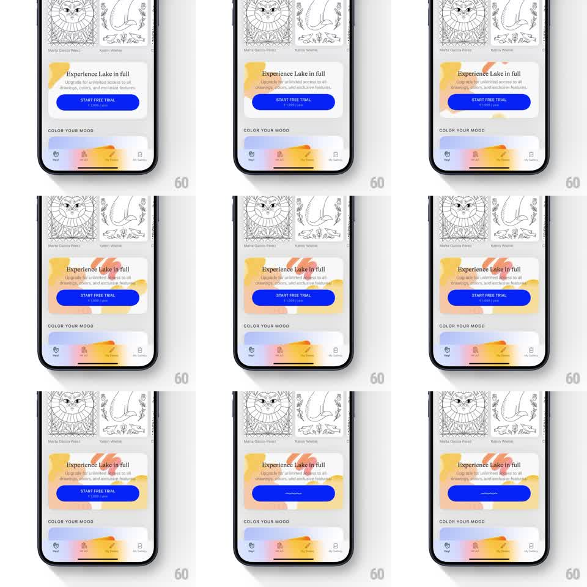

Media
Frame-by-frame

Rebuild this animation 1:1: Lake's subscription upsell card - hand-drawn highlight scribbles gradually accumulate around the "Experience Lake in full" card, and tapping the blue "START FREE TRIAL" button morphs it into a compact loading pill with the brand's wave squiggle.

Rebuild this animation 1:1: Lake's subscription upsell card - hand-drawn highlight scribbles gradually accumulate around the "Experience Lake in full" card, and tapping the blue "START FREE TRIAL" button morphs it into a compact loading pill with the brand's wave squiggle. ## Integration Integration: stack-agnostic spec - springs given as stiffness/damping, timed motions as duration + curve; map every value to your framework and animation library of choice. ## Scene Scrollable coloring-app home: illustration thumbnails up top, then a white rounded upsell card (headline "Experience Lake in full", subcopy, blue filled CTA pill "START FREE TRIAL" with price line), and a "Color your mood" gradient section below. ## Motion spec Pattern: ambient decoration build-up, then tap-triggered button morph. - Over ~4s, orange/peach crayon scribble strokes draw on around the card one by one (~600ms apart): a corner highlight, an underline, a circle near the headline - each stroke draws along its path (~300ms, ease-out). - On CTA tap: the label and price fade out (120ms), the blue pill shrinks horizontally to a compact pill (~120px wide, spring ~320/28, ~300ms), and a small white wave squiggle appears inside, undulating as the loading indicator (phase loop ~1.6s, linear, infinite). - Rest of the screen holds still during the morph. ## Calibration - Scribbles should feel doodled on top of the layout, slightly overshooting card edges. - The pill shrink is smooth and centered - width collapses symmetrically. ## Reduced motion Scribbles fade in statically; button swaps to a plain spinner without morphing. ## Don't miss - The loader inside the collapsed pill is the same hand-drawn wave as the app's loading screen, not a spinner. - Scribble accumulation continues regardless of the tap - it is ambient, not tap-triggered.